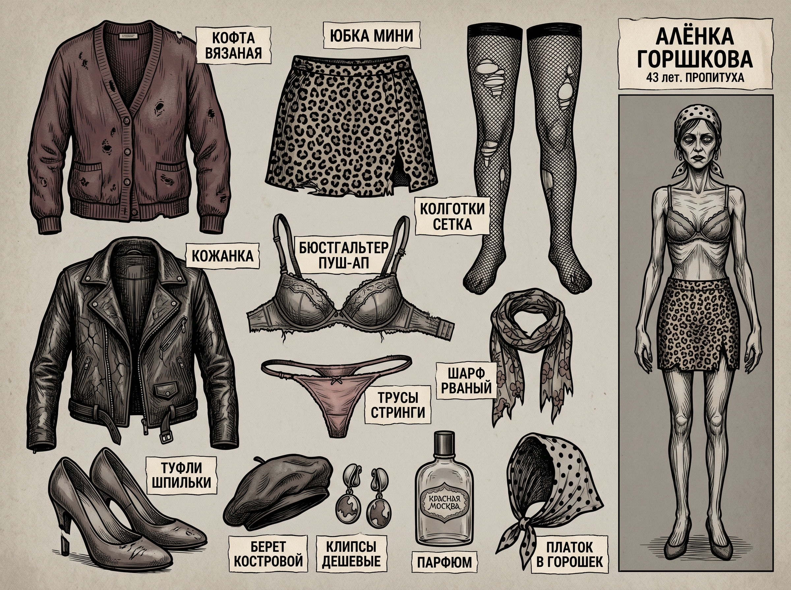
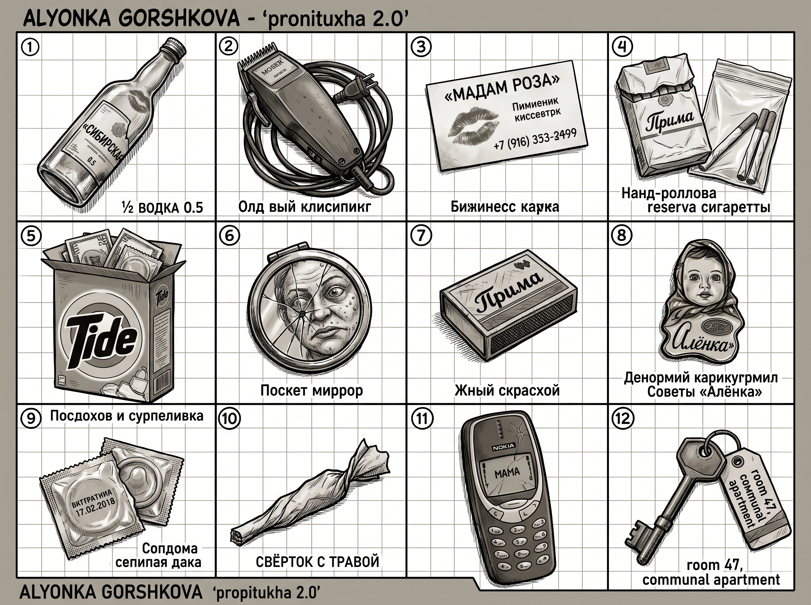
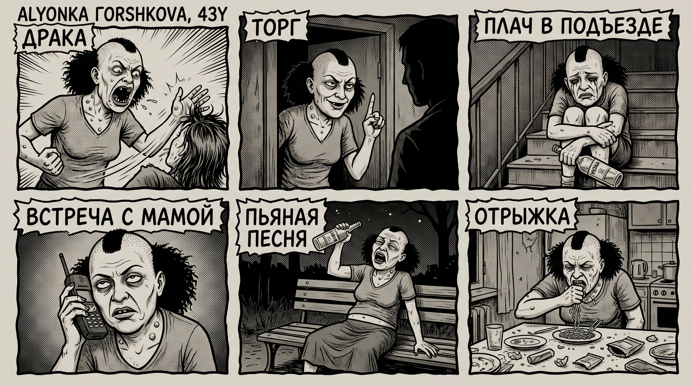
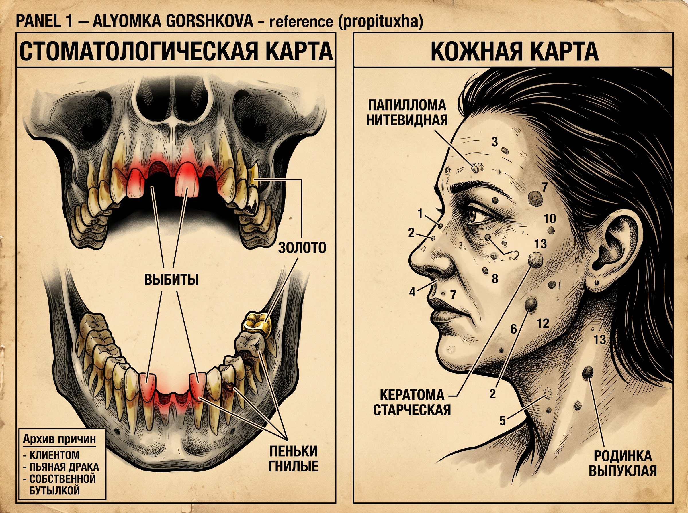
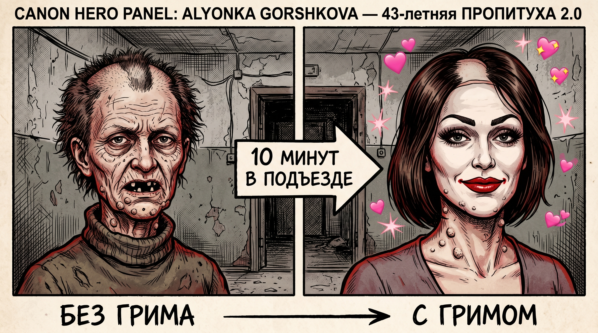
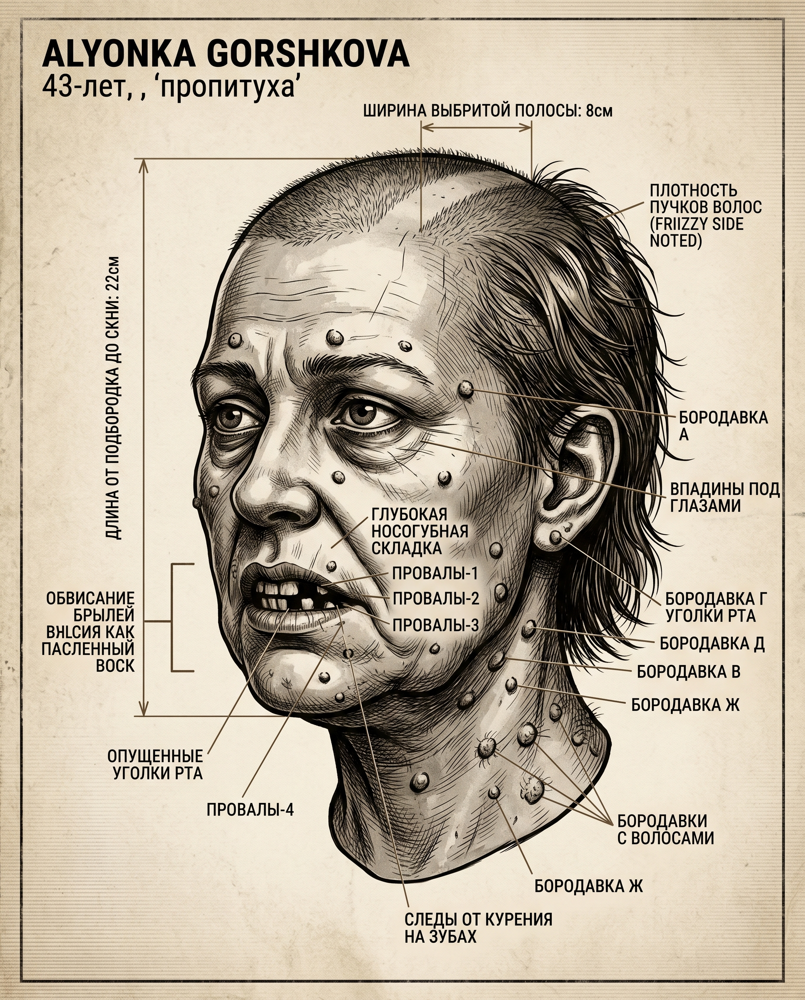
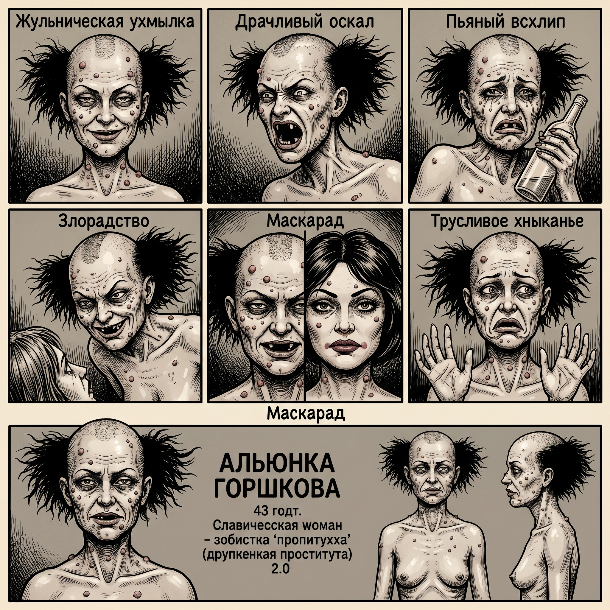
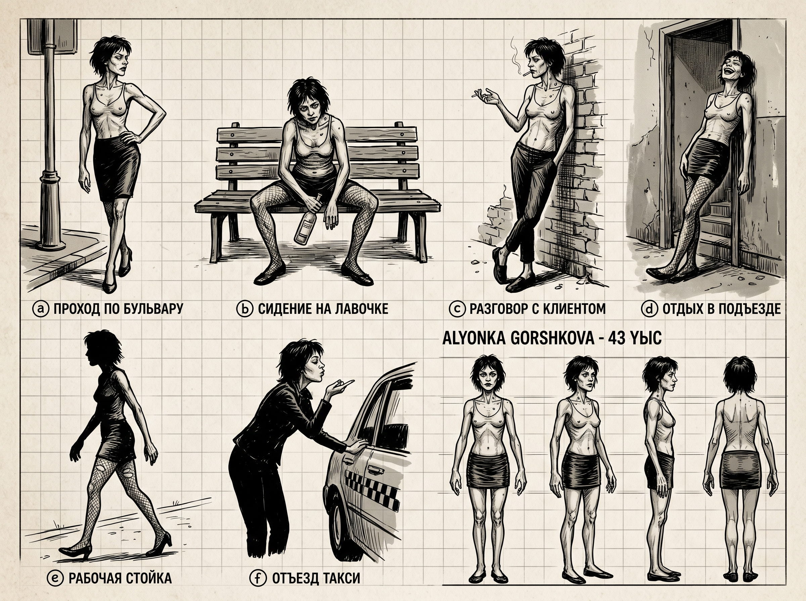

Алёнка Горшкова, 43 года. Жена Коли-Гиббона. Бритая центральная полоса, бородавки по всему лицу, очень худая. Социальный паразит второго эшелона. Манипулирует через жалость, истерику и внезапные приступы «любви». Контраст: жаба без грима → куколка с гримом.








All images above are AI-generated reference studies. Final canonical sheets will replace these.